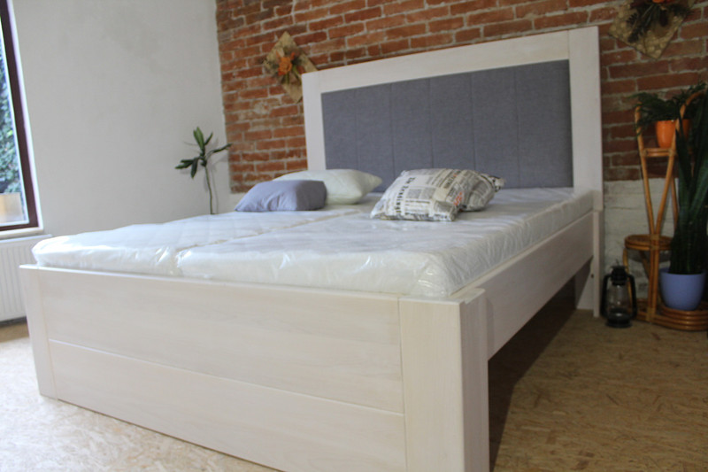
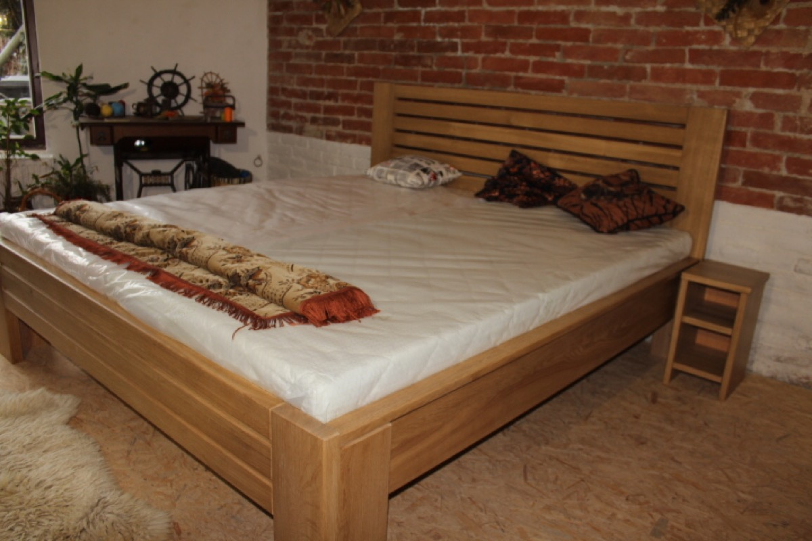

Postele z masivu na míru
Rodinná výroba z buku, jádrového buku, dubu a dalších dřevin. Vyberte podle potřeby, nebo podle typu. Vše vyrobíme i v jiném rozměru.
Ložnice
Pro seniory · od 8 150 Kč

Vysokozátěžové a prodloužené · od 8 400 Kč

S ohrádkou, pro handicapované · od 9 140 Kč
Na míru, čalouněné a atypické · od 18 800 Kč
Podle potřeby
Vysokozátěžové a prodloužené
Nosnost 400 kg na lůžko bez příplatku, vybrané modely z buku a dubu 500 kg, délky 210 a 220 cm.
od 8 400 Kč
- Prodloužená Petra 210 cm 8 400 Kč
- Viktorie 65 cm 8 960 Kč
- Zvýšené dvoulůžko Luxi 15 100 Kč
S ohrádkou, pro handicapované
Vysoká ohrádka na míru, posuvná dvířka za příplatek 1 800 Kč, polohovací a motorové rošty.
od 9 140 Kč
- Jednolůžko EVA s ohrádkou 9 140 Kč
- Jednolůžko EVA bílá 9 840 Kč

Na míru, čalouněné a atypické
Podle nákresu, fotky nebo vašich rozměrů, výroba obvykle do 4 týdnů.
od 18 800 Kč
- Bílé dvoulůžko Anita 18 800 Kč
- Dvoulůžko Benedikta 19 550 Kč
- Dva a půl lůžko Adriana 220 × 200 cm 28 700 Kč
Dětský pokoj

Patrové a vysoké · od 22 220 Kč

Studentské a 1,5 lůžka · od 9 440 Kč
Patrové a studentské postele
Patrové a vysoké
Palandy jsou náš první výrobek z roku 1999. Palanda Irena unese 400 kg na lůžko, vysoká postel Gizell má 6 zásuvek.
od 22 220 Kč
- Palanda Irena 22 220 Kč
- Vysoká postel Gizell 22 800 Kč
- Třílůžková palanda Velma 34 250 Kč
Studentské a 1,5 lůžka
Šířky 120 a 140 cm, s úložným prostorem nebo výsuvnou přistýlkou.
od 9 440 Kč
- Dita 1,5 lůžko 9 440 Kč
- Magda 10 950 Kč
- Lada 120 cm 11 240 Kč
Ložnice

Jednolůžka · od 6 880 Kč

Dvoulůžka · od 15 100 Kč
Dubové postele · od 9 950 Kč

Doplňky k postelím · od 500 Kč
Podle typu

Dubové postele
Masiv o tloušťce 42 mm, povrch olejem, nosnost dvoulůžek nad 400 kg.
od 9 950 Kč
- Jednolůžko Dita 9 950 Kč
- Jednolůžko Soňa 14 850 Kč
- Dvoulůžko Magda 33 100 Kč
Doplňky k postelím
Úložné šuplíky na kolečkách, výsuvné přistýlky, noční stolky, zábrany a madla.
od 500 Kč
- Senior madlo 750 Kč
- Úložný prostor poloviční 2 650 Kč
- Přistýlka pod postel 5 110 Kč
Dílna
Buk, jádrový buk nebo dub?
Smrk a borovice jsou cenově nejdostupnější. Buk je tvrdý a světlý, jádrový buk má výraznou tmavou kresbu, kterou nikdo nezopakuje. Dub je nejtvrdší a nejodolnější. Pro vysokou nosnost doporučujeme buk, jasan nebo dub.

Časté dotazy
Jaká je nejlevnější postel z masivu u vás?
Jednolůžka ze smrku nebo borovice začínají zhruba na 6 880 Kč bez roštu a matrace. Buk a dub jsou dražší, ale trvanlivější.
Je u postele rošt a matrace?
Ceny v katalogu jsou bez roštu a matrace. Pevný masivní rošt (od 1 260 Kč) i matraci můžete přiobjednat.
Můžu postel vidět a vyzkoušet?
Ano, na prodejně v Němčičkách u Židlochovic, po telefonické domluvě.
Nenašli jste přesně to, co hledáte?
Jsme zakázkové stolařství. Vyrobíme podle vašich rozměrů, nákresu nebo fotky.